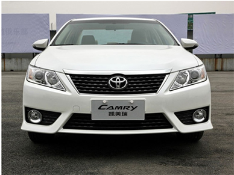
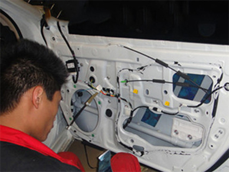

无论生活有多么繁忙，人们总是少不了对高品质生活的追求。这个时候我会想起音乐，音乐能唤起人们的激情，音乐能洗涤人们的心灵。音乐存在人们生活的每个细节，也是生活的产物。如今生活水平的提高，汽车已经不是奢侈品，原车音响因其造价低廉，音质达不到很好的效果，音响改装便成了很多有车族新的消费点。 丰田凯美瑞虽然有着外观大气、人见人爱、功能人性化的优点，但原车喇叭并不能满足车主对音乐的追求，本期丰田凯美瑞的车主千方百计要找到最好的音响改装店，后来找到济南博士达，前来咨询改装。

1.隔音能使音质发挥至最好效果，给丰田凯美瑞做好四门门板的隔音施工，为喇叭创造一个良好的密封的声音环境。
2.垫圈造型独特，必须特别订做一对。在木垫圈上面再套好防水罩，有效的保护喇叭，不会被门内的滴水损害。安装精确而且完全防水。
3.前声场德国彩虹好声系列SL-C6.2套装喇叭的中音单元安装在门板上，外观有点小清新，音质效果也是婉约动人
4.德国彩虹好声系列SL-C6.2套装喇叭的高音安装在原位
5.后声场德国彩虹幻想系列DL-X6同轴喇叭安装在后门板上，加上额外的喇叭木垫圈
6.日本笛神EL-A3004四路功放吊顶安装安装在后备箱顶部，不用占用额外的空间，十分简洁舒适
7.所有的安装完成后试听，婉约细腻的声线缓缓传入耳朵，层次感分明，似乎每个音符都生动地跳跃在身边，渗透到身体的每一个细胞，触动着我们的心灵。车主对这次的改装相当满意！